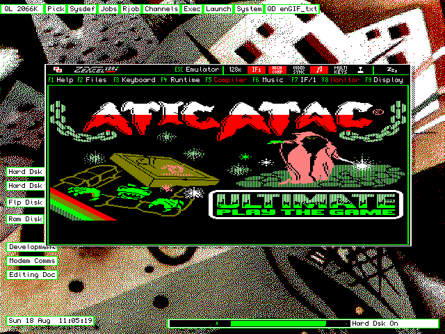

Introducción a la Emulación (y II)
Ahora que ya sabemos qué es y cómo funciona un emulador
profundizaremos en los emuladores de Spectrum, en una visión
global de los diferentes emuladores disponibles y la gran
variedad de sistemas operativos en que corren.
Este mes nos centraremos en los distintos emuladores de Spectrum (al
menos los más conocidos) para las diferentes arquitecturas mayoritarias.
El objetivo es dar al lector que se introduce en el mundo de la
emulación no sólo una lista de emuladores, sino también una guía de
qué emulador puede elegir con respecto a sus necesidades. No todos los
emuladores soportan los mismos formatos, y muchos de ellos están
especialmente diseñados para cubrir carencias que otros tienen.
Un ejemplo de esto sería el emulador Z80, que no es uno de los
mejores actualmente, pero que sin embargo es de los pocos que nos
van a permitir emular un Spectrum con mucha fidelidad en máquinas 486
(suponiendo que decidiéramos destinar uno de estos PCs antiguos a
máquina-emuladora o sistema para correr juegos abandonware).
Los emuladores
Lo primero que tenemos que hacer para trabajar con emuladores es
seleccionar aquel más adecuado a la arquitectura que usamos. Desde PCs
con Linux hasta ordenadores Amiga, pasando por consolas Playstation,
tenemos una enorme gama de emuladores disponibles.
En la sección de emuladores de World Of Spectrum podremos descargar
todos ellos. Pero... ¿cómo saber cuál es el emulador más adecuado para
nosotros? Veamos un rápido comentario de algunos uno de ellos.
MS-DOS:
-
Z80 (Gerton Lunter): uno de los primeros emuladores de Spectrum.
Es shareware (hay que pagar y registrarse para obtener la versión
completa) y tenía en su época características que lo hacían muy
competitivo, como correr los juegos de Spectrum correctamente en un
486 a 33 Mhz. Existe una versión Windows llamada WinZ80 que también es
shareware.
-
X128 (James McKay): Bajo MS-DOS, este era uno de los emuladores más
utilizados en los primeros tiempos de la emulación de Spectrum en PC
junto a Z80 y Spectrum. Soporta Sound Blaster y Adlib y tiene el código
fuente disponible para la versión 0.5 (de forma que hay port de esa
versión para Unix). Actualmente se acaba de retomar su desarrollo con
una "tímida" actualización, aunque lamentablemente X128 sigue muy
por detrás de otros emuladores que veremos posteriormente.
-
Warajevo (Zeljko Juric y Samir Ribic): desarrollado durante la
guerra de Yugoslavia en Sarajevo, es un emulador muy completo que
corre sobre MS-DOS. Pertenece a la misma línea temporal que los
anteriores.
-
Spectrum (Pedro Gimeno): uno de los emuladores españoles más
conocidos, desarrollado por Pedro Gimeno para la revista PCManía.
Utiliza el formato de ficheros SP (snapshot) y emulaba el modelo de
Spectrum 48K. Fue uno de los emuladores que más utilicé a título
personal, de modo que no puedo desde aquí sino agradecerselo a su
autor. Corre perfectamente en máquinas PC antiguas (como 486 y 386).
-
Spec256 (Íñigo Ayo y David Goti): La idea de los autores de este
emulador (ya no tan antiguo como los anteriores) era de dotar de
mayor colorido a los clásicos del Spectrum. Para ello programaron un
emulador capaz de mostrar juegos empaquetados de una forma especial,
en 256 colores. Para poder jugar en 256 colores era necesaria
una modificación de los juegos (rediseñando y modificando los
gráficos). Se pasaron a 256 colores una serie de juegos clásicos, pero
posteriormente el proyecto no pareció avanzar más en este sentido, ya
que requería trabajo por parte de gente que se dedicara a pasar los
gráficos de los juegos a una versión de 256 colores. Este trabajo no
sólo era gráfico, sino que requería encontrar y modificar los
sprites originales en el juego.

|
| Versión original para Spectrum |
|
|
| Versión a 256 colores para Spec256 |
-
R80 (Raúl Gómez): Otro emulador Español desarrollado por Raúl Gómez.
Probablemente uno de los mejores para MS-DOS. Es limpio, tiene un buen
sistema de menúes, emula casi a la perfección todos los juegos y la
temporización de las instrucciones, y soporta casi todos los formatos de
fichero existentes. R80 es un desarrollo de los últimos años, aunque
parece estar parado por ocupación del autor.
-
RealSpectrum (RamSoft): Este emulador es probablemente el más
usado para MS-DOS en la actualidad (junto a R80). El motivo radica
en que RamSoft (los desarrolladores de RealSpectrum) dispone de
información muy detallada sobre la ULA del Spectrum, lo cual le
ha permitido emularla de una forma casi perfecta. Esto hace que
muchos juegos y demos que no funcionaban en otros emuladores por
motivos de temporización y por estar basados en trucos del Z80 no
emulados, funcionen en RealSpectrum. Debido a esta compleja emulación,
RealSpectrum requiere bastante potencia de procesador para funcionar
al 100% (aproxidamente un Pentium 200 MMX o superior), mientras
que algunos de los emuladores anteriores podían ejecutarse en 386
y 486 a 33 ó 66 Mhz. Este emulador incorporaba además un sistema
de grabación de eventos llamado AIR que permitía grabar todo lo
que sucedía en el juego (como si fuera un vídeo) de forma que otra
persona puede reproducir este fichero en su RealSpectrum visionando
la partida completa jugada por el primero. Esto es muy útil para
mostrar recorridos completos de juegos, trucos, obtención de altas
puntuaciones, o para la realización de concursos. Actualmente este
fichero de grabación de eventos (el .AIR) ha sido reemplazado por el
.RZX, como se vio en el artículo de emulación de Magazine ZX nº 1.
-
Bacteria (Antonio José Villena Godoy): Un emulador muy curioso,
escrito completamente en ensamblador y que ocupa apenas unos cuantos
KiloBytes. Está limitado por su tamaño (en opciones, formatos
soportados, etc.) pero merece ser nombrado por ser probablemente el
emulador de Spectrum más pequeño existente.
Si hemos de elegir un emulador para MS-DOS, la elección deberá basarse
en el tipo de máquina que poseamos. Para máquinas poco potentes, Z80,
Spectrum o X128 (siendo el mejor de los tres el primero de ellos,
seguido de X128, por cantidad de opciones). Para máquinas potentes,
Realspectrum o r80 (cualquiera de los 2).
Windows
-
ZX-32 (Vaggelis Kapartzianis): uno de los primeros emuladores
para win32 (Windows95 y superior) que apareció. Bastante cómodo y
sencillo de usar, aunque peca un poco de falta de opciones. Puede
ser bueno para PCs antiguos (Pentium MMX), pero en cualquier otro
tipo de procesador conviene utilizar cualquiera de los que veremos
a continuación.
-
GLECK (Ignacio Burgueño): un emulador muy completo escrito por
nuestro compañero Ignacio Burgueño. Lamentablemente su desarrollo
está algo parado en el último año.
-
Es.pectrum (Javier Chocano): Completísimo emulador de Spectrum
español, probablemente uno de los más sencillos de usar y configurar.
Se instala a partir de un fichero ZIP y permite asociar (como la
mayoría de los otros emuladores de Windows) las extensiones de
ficheros típicos al emulador, de forma que al hacer doble click sobre
ellos se abra el emulador con el Snapshot cargado en memoria, o con la
cinta introducida y en modo de reproducción (aunque esta característica
también la incorporan algunos de los otros emuladores para Windows).
|
|
| Es.pectrum (paradójicamente, corriendo en un emulador de Windows bajo Linux). |
-
Spectaculator (Jonathan Needle): Probablemente es el emulador que
más desarrollo ha sufrido en este año. Incorpora gran cantidad de
funciones, la emulación es muy fiel y es el precursor del futuro
formato de fichero de snapshot .SZX como estándar de snapshot entre los
diferentes emuladores. Funciona en todos los sistemas Windows desde
W95, y emula todo tipo de dispositivos hardware de Spectrum. Permite,
como Es.pectrum, grabar ficheros .RZX.
-
SPIN (Paul Dunn, Mark Woodmass and Mark Boyd): en la línea de los
demás emuladores de Windows: muy completo y con opciones que lo hacen
especial, como la posibilidad de pasar texto desde el portapapeles al
Spectrum tal y como si lo hubiéramos tecleado (incluso sabe pasarlo
a modo 48K con las teclas y tokens adecuados). Tan recomendable como
Es.pectrum o Spectaculator.
-
RealSpectrum (Windows) (Ramsoft): Versión Windows (DirectX)
del emulador RealSpectrum (la versión DOS tenía problemas de sonido
con ciertas tarjetas y no funcionaba correctamente bajo Windows 2000 y XP).
Realmente es muy complicado elegir un "mejor emulador" en esta
plataforma. El consejo del autor es probar todos ellos y quedarnos con
el que más se adapte a nuestros gustos de usabilidad y necesidades.
Existen muchos otros no comentados, como Klive, que también cumplen
sobradamente las funciones de emulación básicas. Probablemente
Es.pectrum, SPIN y Spectaculator serán del agrado de la mayoría de
los usuarios, por su sencillez y potencia.
UNIX/Linux
-
XZX Pro (Erik Kunze): Este emulador fue uno de los primeros
emuladores de Spectrum en plataforma UNIX. Es shareware y requiere de
registro para poder utilizar todas sus opciones, de modo que no es de
los más populares. Soporta gran cantidad de formatos y opciones, y la
emulación es en general buena.
-
Aspectrum (Santiago Romero, Álvaro Alea, Metalbrain): Este emulador
de Spectrum creado por el autor de este artículo en estrecha
colaboración con Alvaro Alea y Metalbrain (amén de la propia ayuda de
Philip Kendall -FUSE-, Raúl Gómez -r80- e Ignacio Burgueño -Gleck-
entre otros) es un emulador de Spectrum multiplataforma (Linux y
DOS/Windows, principalmente) que emula el Spectrum 48K. Soporta los
diferentes formatos clásicos, emula el sonido, y fue el primero en
emular la pistola Gunstick mediante el uso del ratón. Pese a sus
características, no puede competir con los 2 emuladores que veremos
a continuación.
-
Glukalka (Dmitry Sanarin): este emulador ruso (que emula los modelos
Pentagon y Scorpion, nacidos en ese país) es bastante completo pese a
estar todavía en desarrollo. Soporta cintas y discos, permite aplicar
filtros a la pantalla (para ver la imagen del Spectrum como en una
TV), y tiene un debugger y un navegador de cintas avanzado.
-
FUSE (Philip Kendall): Sin duda el mejor emulador de Spectrum para
plataformas UNIX, por varios motivos. El primero, estar escrito en
puro C, siendo totalmente portable entre las diferentes plataformas
(incluso se puede compilar en MS-DOS/Windows si se cambia el backend
gráfico, como se ha hecho en PocketClive para PocketPC, que no es más que
un port de FUSE). En segundo lugar, es libre (al igual que Aspectrum), es
decir, podemos aportar cualquier modificación ya que disponemos
del código fuente. Soporta todos los formatos de fichero clásicos
(TAP,TZX,DSK,Z80...) y todos los modelos de Spectrum existentes
(incluídos los rusos). Permite grabar y reproducir ficheros RZX, y
apunta a convertirse en el emulador estándar de Spectrum para UNIX.
|
|
| FUSE, the Free Unix Spectrum Emulator |
Sin duda en plataformas UNIX, FUSE y Glukalka se muestran como los
mejores emuladores, en ese orden.
Otras plataformas
No sólo de UNIX o Windows viven el hombre, de modo que también
existen emuladores de Spectrum para las diferentes plataformas
no mayoritarias (que siguen siendo felizmente usadas por muchos
usuarios). A saber:
AMIGA
- ZXAM (Toni Pomar)
- ZX-Live (Dmitriy Zhivilov)
- X128 (port por Paul Hill)
MACINTOSH
- FUSE (Fredrick Meunier, port del emulador de Philip Kendall)
- ZXSP-Mac (Günter Woigk)
- MacSpectacle (Günter Woigk)
PALMOS, TEXAS, PSION y MÓVILES
- MIZX, PALMSSEC y ZX-PILOT para PalmOS
- ZX Emul para Psion 3 (Freeman)
- Sinclair Spectrum Emulator para Psion 5 (Palmtop BV)
- ZX9200 para Nokia Comunicator 9210 (WildPalm)
- Tezxas (Samir Ribic) para Calculadora TI89 y TI92 plus
|
|
| Un Spectrum en tu calculadora Texas Instruments |
DISPOSITIVOS CON WINDOWS CE
- Sinclair Spectrum Emulator (Palmtop BV)
- PocketClive (por Anders Holmberg, port del FUSE de Philip Kendall)
CONSOLAS
Speculator (Gabriele Roncolato) para PSX
Spectrum (Anthony Ball) para PSX
DreamSpec (Bigboy) para Dreamcast y PS2
ZXAdvance (The Hive) y FooN (Ben Stragnell) para GBA
GPSpeccy, Speccyal'K y ZXGP32 para GP32.
OTROS
- BeZX (port de ZXZ) y Beccy para BEOS.
- ZX Spectrum Emulator (Christian Gandler) para Atari.
- ZExcel: Emulador de Spectrum para el propio Sinclair QL
| 
|
| Emulador de Spectrum para Sinclair QL |
Emuladores en Java
Hemos dejado para el final los emuladores realizados en Java por la
relativa importancia que tienen. En principio Java no es la plataforma
ideal para desarrollar juegos y emuladores por diferentes razones
técnicas, pero su portabilidad hace que disponer de emuladores en
Java los ponga al alcance de cualquier tipo de dispositivos capaz
de correr una máquina virtual de Java: desde móviles hasta PDAs,
podremos jugar a nuestro Spectrum en cualquier lugar. Incluso algunas
páginas incorporan un applet Java para jugar vía Web (sin instalar
un emulador) los juegos de Spectrum que nos podemos descargar. Los
emuladores existentes en este área son:
- Hob (Nigel Barford)
- Jasper (Adam Davidson y Andrew Pollard)
- Spectrum Emulator For Java
- JZ Speccy (Marzio De Biasi)
- ZZ Spectrum (Troels Nørgaard)
- JZX (Razvan Surdulescu)
|
|
| Jasper: emulando el Spectrum en una página Web |
Resumen
Como hemos visto, existen gran cantidad de emuladores para una
extensa selección de arquitecturas que seguramente cubrirán todas
nuestras necesidades. Por otra parte, la existencia de emuladores
portables en C y en Java asegura la disponibilidad del código fuente
de los mismos para llevarlos a otras plataformas (como se ha hecho con
FUSE de Philip Kendall).
|
SROMERO (NoP) |
|